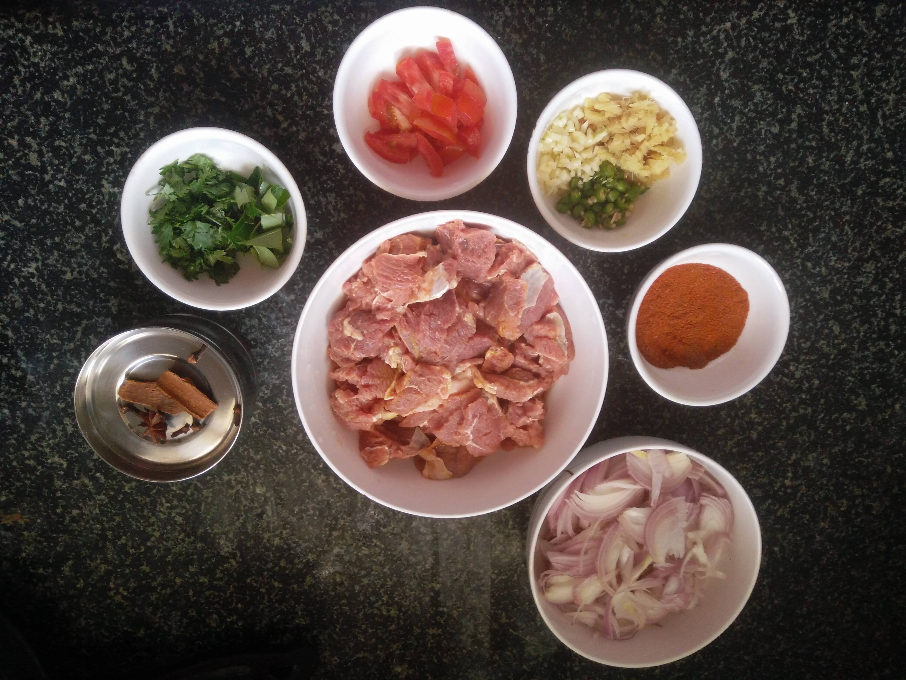

Kerala Style Spicy Beef Curry Picture Recipe

Beef, sliced : 1/2 Kg (Marinated with 1/2 teaspoon salt & 1/2 teaspoon turmeric for half an hour)
Onions, medium, sliced: 3 nos
Spice Mix: Chilli Powder (1/2 Tablespoon) + Turmeric Powder (1/2 Teaspoon) + Pepper Powder (1/2 Teaspoon) + Coriander Powder (2 Teaspoons) + Aniseed Powder (1 teaspoon) + Garam Masala (1/2 Teaspoon) + Salt (1/2 Teaspoon)
* Spice Mix has to be further mixed with 1 1/2 Teaspoon of Vinegar
Garlic, diced: 1 Tablespoon
Ginger, diced: 1 Tablespoon
Green Chilli, diced: 2 nos
Tomato, medium, diced: 1
Coriander Leaves, Curry Leaves
Cinnamon: 1
Cloves: 3
Star Anise: 1